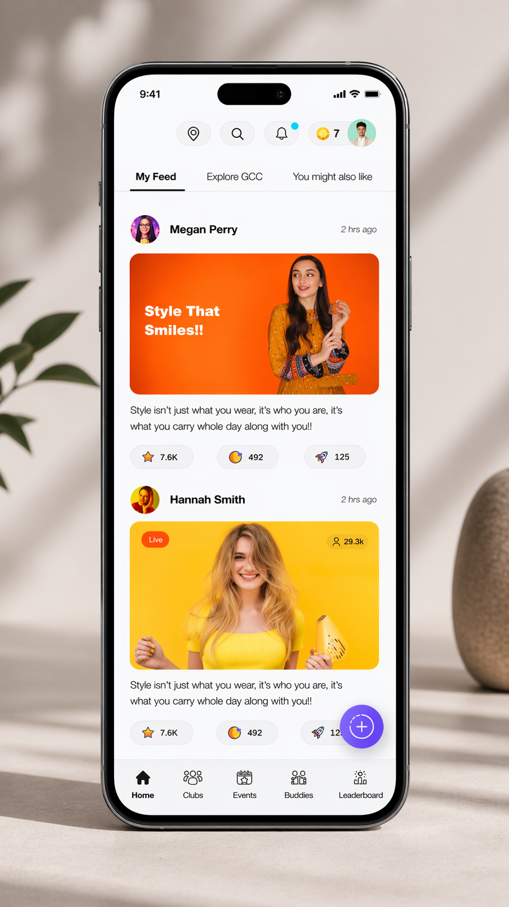
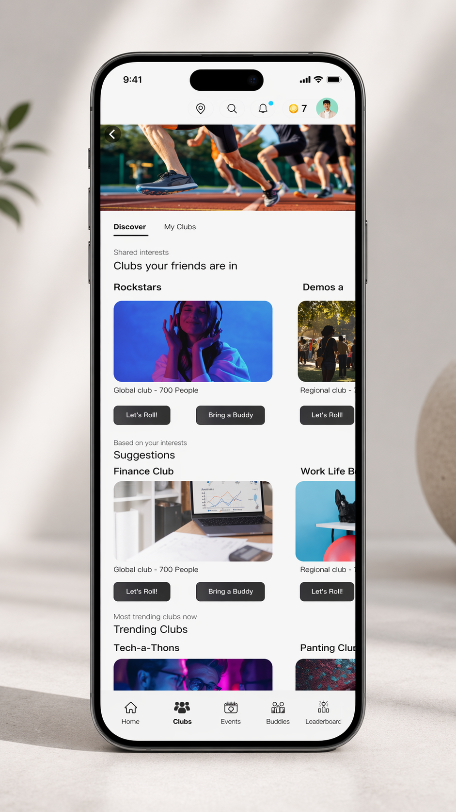
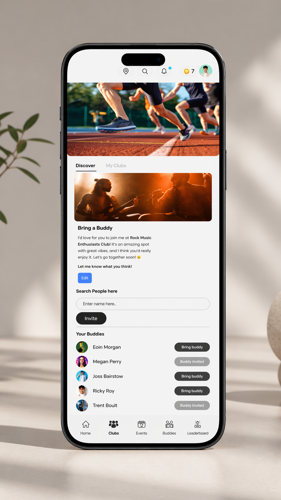

HPE / NCG Client · Enterprise UX · Multi-role Platform · 03/05
HPE's Employee Resource Groups were functioning — but through friction, not infrastructure. Membership over email. Events over calendar invites. Impact measured manually. The communities were real. The tools were improvised.
HPE commissioned NCG to build The Hub: a purpose-built ERG platform consolidating management, communication, participation, and analytics into one coherent system. I led UX across all modules, all six roles, and both the web and PWA surfaces.
The Brief
"Design a comprehensive ERG platform to streamline management, foster employee engagement, and support HPE's commitment to DEI."
The brief described a list of capabilities. It didn't describe the design problem underneath them — which was considerably harder.
The default approach to a platform with six modules and six user roles is to design them sequentially. Each role gets its own design pass. The platform ships as the sum of its parts.
That approach produces something that technically does everything and feels like nothing. The Hub isn't six products for six users. It's one platform where six different people are simultaneously present, interacting with the same underlying objects — clubs, events, posts, members, feedback — from radically different positions.
DESIGN THEM AS SEPARATE ROLE FLOWS AND YOU SHIP SIX INTERACTION LANGUAGES FOR THE SAME SYSTEM.
There was a second problem underneath. An enterprise community platform — social layer hosted by an employer, used by employees. Building something that feels genuinely voluntary and genuinely social inside an enterprise context required specific design decisions I had to argue for and hold through the project.
Before any screen work began, the most important design act was mapping the cognitive mode of each role — not just their tasks, but what they were actually trying to know at any given moment.
Six-role cognitive mode map
User
"What's relevant to me, and how involved do I have to be?"
Club Owner
"Is my club healthy, and what do I do to keep it growing?"
Event Manager
"Is this event coming together, and who knows about it?"
Moderator
"Is the community behaving well, and what needs my attention right now?"
Admin
"What do I need to know, and what do I need to act on — across the portfolio?"
Poll Creator
"What does the community think, and can I find out quickly?"
The architecture decision: one product, role-responsive surfaces. The underlying IA is shared. What's foregrounded, what actions are available, how information is organised — that adapts to how you enter the system.
Decision 01
People don't join ERGs for event registration. They join because they want to belong. If the platform can't replicate the texture of a real community, nobody comes back.
The social layer includes a personalised home feed with three views, post creation with image and video support, a live content indicator, and a Buddies system that runs through onboarding and persists on every screen.
The constraint held throughout: nothing should feel like performance for the employer. Every mechanic had to serve the user's desire to connect — not the organisation's desire to report participation. Participation driven by social pressure is not participation — it's attendance.
Screen — The Hub Home Feed

Three feed views (My Feed, Explore GCC, You Might Also Like) with live post indicator, engagement counts, and bottom nav that persists across the full experience.
Decision 02
Separate interfaces per role are cleaner to design. One product is harder but coherent to use. The reason to choose the harder path: people in this platform don't have fixed identities. A Club Owner is also a member of other clubs where they're a regular User. Separate interfaces fragment the experience of people who are genuinely multi-role.
The nav and available surfaces adapt to the user's primary role on login. Same objects, different framing and permissions.
Screen — Clubs Discovery

Club discovery personalised to the user's network and interests — Clubs your friends are in, Suggestions, Trending — without requiring manual search.
Decision 03
Gamification in an ERG platform can create momentum — or it can create anxiety. Less-active members shouldn't feel ranked as less committed.
The milestone system, mountain journey metaphor, and quarterly leaderboard all reward meaningful participation milestones, not raw activity counts. The constraint: no gamification element should make a less-active member feel less valued.
Screen — Bring a Buddy Mechanic

The Buddy mechanic is personal — your invitation includes a message you can edit, and your existing buddies are surfaced inline with clear invite states.
Decision 04
Three sub-modules: Content Review (post-level), Feedback Review (event-level), Image Review. The three-action model for Content Review — Delete, Warn, Approve — was deliberate. Warn User sits between doing nothing and deleting, letting the system communicate a standard without punishing immediately.
The constraint: the moderation interface processes items that need a decision. It doesn't browse member profiles or review history. Triage, not surveillance.
Decision 05
~15 fields, four involving role assignments or toggles that affect what else is required. The approach: a single scrollable view with toggle pairs (Global/Regional, In-person/Virtual) as visible scope controls. Field dependencies become legible. Active fields respond to choices. The user always sees the full form.
Decision 06
The Hub is a PWA — one codebase, browser rendering. The three-column desktop layout collapses to single column + bottom nav on mobile. Every component had to earn its place at both sizes. Nothing got to be a desktop-only pattern. That constraint made the design system better than it would have been without it.
1,200+
Users across six distinct roles — on web and PWA surfaces.
6
Distinct roles served by one coherent platform — not six separate products.
2×
Viewports (desktop + PWA) served by a single design system with no separate mobile components.
→
Post-launch adoption tracking underway. ERG leader onboarding in progress — data to be surfaced as the platform matures.
Designing an enterprise community platform is a different problem than designing either an enterprise tool or a community platform. Enterprise tools fail by being too rigid. Community platforms fail by being too permissive.
Almost always, I argued for belonging first — because you can add governance later, but you can't recover a community that never formed.
THE TEST OF AN ENTERPRISE SOCIAL PRODUCT IS WHETHER PEOPLE RETURN BECAUSE THEY WANT TO — NOT BECAUSE THEY HAVE TO.
Next Project
PWC DASHBOARD